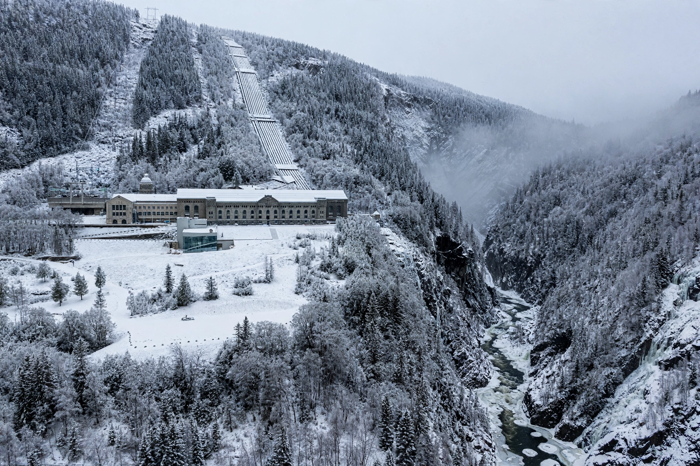

The Norwegian heavy water sabotage (Norwegian: Tungtvannsaksjonen) was a series of Allied-led efforts during World War II to stop the production of heavy water at the Vemork hydroelectric plant outside Rjukan in German-occupied Norway. Heavy water could serve as a neutron moderator in a nuclear reactor, and the Allies feared it would advance the German nuclear weapons programme. The operations — carried out chiefly by Norwegian commandos trained in Britain — are regarded as among the most successful acts of sabotage of the war.
| Norwegian heavy water sabotage | |
|---|---|
 The Vemork plant, where heavy water was produced. | |
| Date | 1942–1944 |
| Location | Vemork, Telemark, Norway |
| Participants | Norwegian SOE commandos (Kompani Linge), RAF, USAAF |
| Outcome | Heavy water production destroyed; ferry SF Hydro sunk |
The Norsk Hydro plant at Vemork was the world's first site to produce heavy water (deuterium oxide) in commercial quantities, as a by-product of ammonia production using electrolysis. After the German invasion of Norway in April 1940, the plant's output was requisitioned for Germany. The British Special Operations Executive (SOE) recruited exiled Norwegians of the Norwegian Independent Company 1 (Kompani Linge) for attacks on the plant.
In October 1942 an advance party, Operation Grouse (later Swallow), parachuted onto the Hardangervidda plateau to prepare a landing zone. The follow-up glider assault, Operation Freshman (November 1942), ended in disaster when both gliders and one towing aircraft crashed; the survivors were captured and executed by the Gestapo. Undeterred, SOE dropped a second team in February 1943 for Operation Gunnerside. Joining the Grouse party, the saboteurs — led on the ground by Joachim Rønneberg, with Knut Haukelid among the group — skied to Vemork, climbed the gorge, entered the plant, and destroyed the electrolysis cells and some 500 kg of heavy water, escaping without firing a shot or losing a man.
The Germans rebuilt the plant within months, prompting a large USAAF bombing raid on Vemork and Rjukan in November 1943, which caused limited damage to production but led the Germans to abandon the site and ship the remaining heavy water to Germany. On 20 February 1944, Haukelid's team planted a bomb aboard the railway ferry SF Hydro, which sank in deep water on Lake Tinn carrying drums of heavy water; eighteen people were killed, including Norwegian civilians.
The sabotage is credited with materially delaying the German nuclear programme, though historians debate how close that programme ever came to success. The story was dramatised in the film The Heroes of Telemark (1965) and the Norwegian-British TV series The Heavy Water War (2015). Rønneberg, the last surviving saboteur, died in 2018.